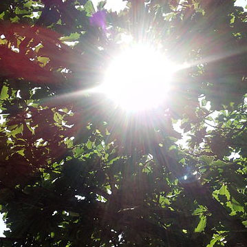

Rob Coridan
Principal Investigator
Professor in Chemistry and Biochemistry
Professor in Chemistry and Biochemistry
Postdoc, Chemistry, Caltech 2010-2015
PhD, Physics, UIUC, 2009
BS, Physics/CIS, Ohio State, 2002
PhD, Physics, UIUC, 2009
BS, Physics/CIS, Ohio State, 2002
238 Chemistry Building
Email: rcoridan at uark dot edu
Mailing address:
Department of Chemistry and Biochemistry
119 CHEM
1 University of Arkansas
Fayetteville, AR 72701
Department of Chemistry and Biochemistry
119 CHEM
1 University of Arkansas
Fayetteville, AR 72701
-

Grecia Alvarado Muñoz
MSEN Ph.D. Student
B.S. Chemical Engineering, 2019
U Nacional de San Agustin de Arequipa
M.S. Materials Science and Engineering, 2025 U of Arkansas Research Interest: Chemical control of electroless deposition reactions for functional composite synthesis -
Chase Aubin
Chem Ph.D. Student
B.S. Chemistry
St. Lawrence University, 2026
Research Interest: Transition metal nitrides for photonic glass photoelectrodes -
Ashlyn Descarpentrie
Chem Ph.D. Candidate
B.S. Chemistry
U of Arkansas, 2023
Research Interest: Photonic glass photoelectrodes for solar fuels applications -
Ben Hollis
Chem Undergrad -
John McLaughlin
MSE M.S. Student
B.S. Chemistry
Oral Roberts University, 2026
Research Interest: ALD synthesis of multifunctional thin films -
Mac Winter
Chem Ph.D. Student
U of Arkansas
Research Interests: Synthesis of multifunctional colloidal particles for photonic applications
Alumni
- Mac Winter, BS Chemistry, 2026
- Rishabh Srivastava, MS MSEN, 2026
- Joseph Joel Muhanga, PhD MSEN, 2026
- Matt Hughes, BS Chemistry, 2026 - Honors Thesis: Tunable Physical Color in Nanostructured Materials
- Chase Aubin, Chem REU student from St. Lawrence University (2025)
- Samuel Conlin, PhD Chemistry, 2024 - stealth startup
- Anna Johnson, BS Chemistry, 2024 - Honors Thesis: Synthesis of Structured CuBi2O4 Photoelectrodes
- Trent Papenmeier, BS Chemistry, 2024 - Honors Thesis: Electroless Deposition of Cu and Bi onto Polymer Nanospheres
- Blake Sterling, Graduate Student - Fritsch Lab, University of Arkansas
- Ashlyn DesCarpentrie, BS Chemistry, 2023 - Honors Thesis: Developing Methods for Pattern Transfer in Photoelectrochemical Lithography
- Thomas (Ian) Hollis, BA Chemistry, 2023 - Honors Thesis: CO2 reduction on Liquid Metal Electrocatalysts
- Hamed Mehrabi, PhD MSEN, 2022 - Postdoc, Northwestern University
- Caroline Eddy, BS Chemistry 2022 - Honors Thesis: CuBi2O4 Photocathodes
- Justin Rowan Reed DeMoulpied, PhD Chem, 2022 - Visiting Assistant Professor, Lyon College
- James Lowe, PhD Chem, 2022
- Zebulon Schichtl, PhD Chem, 2022 - Chem Laboratory Coordinator and Curriculum Specialist, Hendrix College
- Rachel Cherry, MS Chem, 2022 - Sales, Avantor-VWR
- Elizabeth Johnson, MSE REU student from Sewanee: the University of the South (2021)
- Mollie Henry, BS Chemistry, 2021 - Honors Thesis: A Generalized Understanding for the Galvanic Replacement Reaction on Cuprous Oxide
- Jalyn Vance, BS Chemistry, 2021
- Sydney Woodruff, BS Chemistry, 2021
- Isaac Hopwood, BS Chemical Engineering, 2022
- Jessica Killenbeck, BS Chemistry, 2022
- Brayley Gattis, BS Chemistry (post-graduate researcher), 2019
- Chandler Kline, BS Chemical Engineering, 2018
- Jaydee Edwards, Chemistry REU Student from John Brown U., 2018
- Blake Trickey, MicroEP REU Student from SE Missouri State U., 2018
- Walker Perez, BS Chemical Engineering, 2017
Interested in joining us? Contact Rob for more information.